Corullón, un pueblo con historia
Diciembre 1982

Nº 1
Abril 1983

Nº 2
Mayo 1983

Nº 3
Mayo 1983
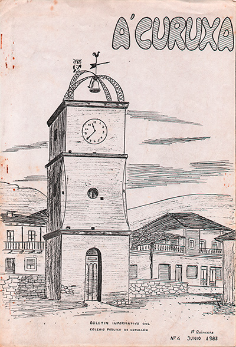
Nº 4
Junio 1983

Nº 5
Especial Vacaciones 1983

Nº 6
Septiembre 1983
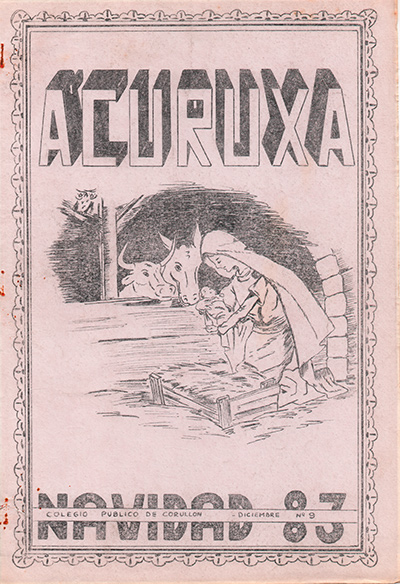
Nº 9
Diciembre 1983

Demografía de Corullón
Diciembre 1983
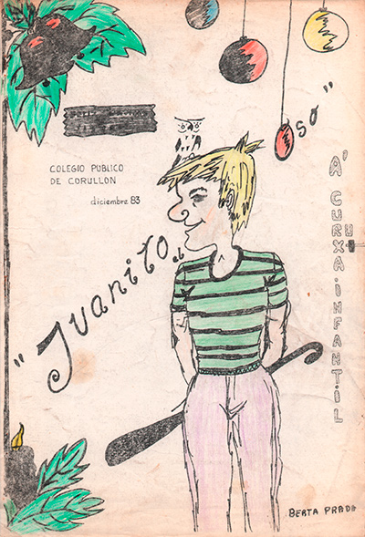
Curuxa Infantil
Diciembre 1983
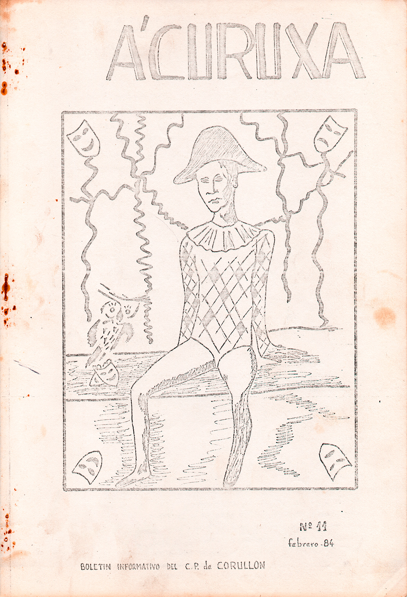
Nº 11
Febrero 1984
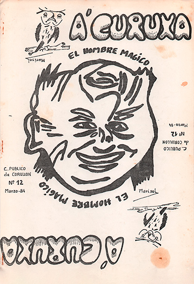
Nº 12
Marzo 1984
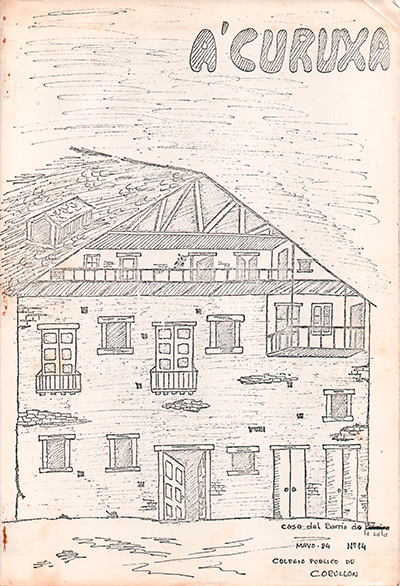
Nº 14
Mayo 1984
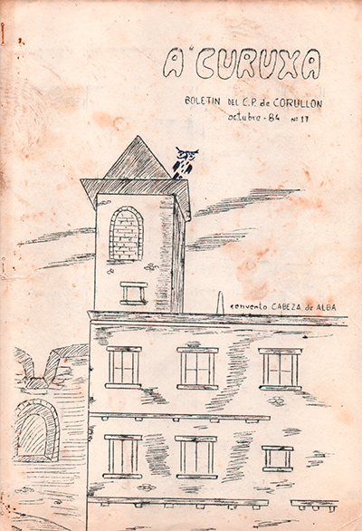
Nº 17
Octubre 1984
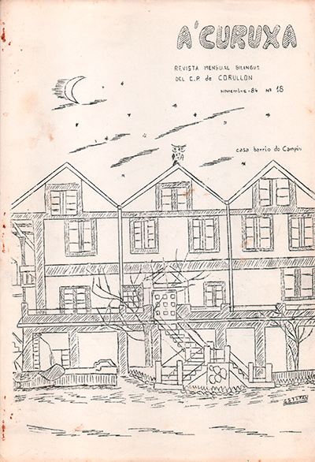
Nº 18
Noviembre 1984
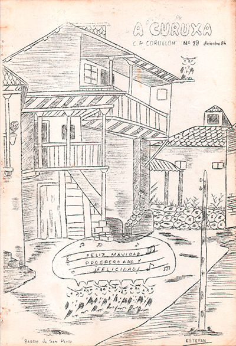
Nº 19
Diciembre 1984
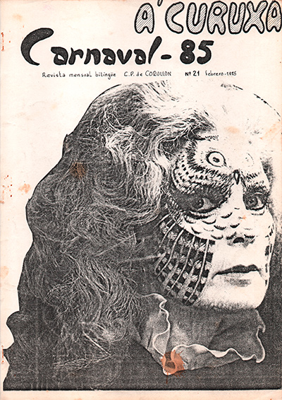
Nº 21
Febrero 1985
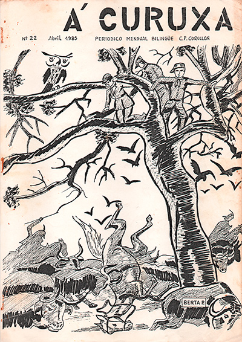
Nº 22
Abril 1985
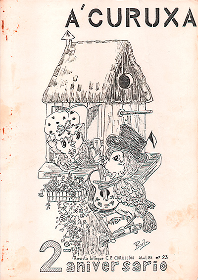
Nº 23
Abril 1985
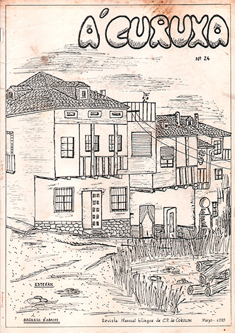
Nº 24
Mayo 1985

Nº 26
Octubre 1985
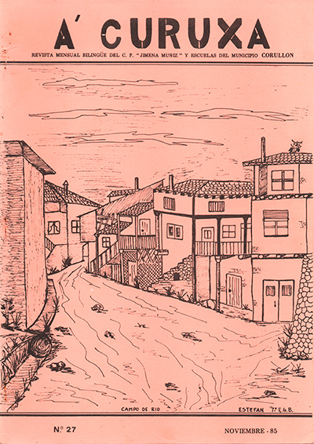
Nº 27
Noviembre 1985
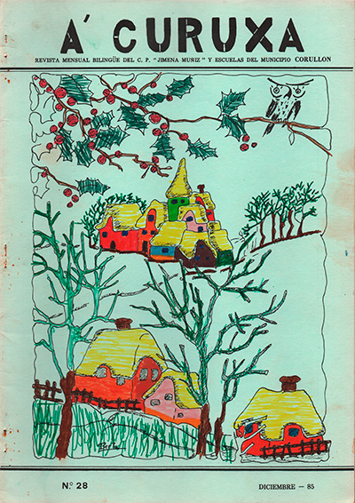
Nº 28
Diciembre 1985
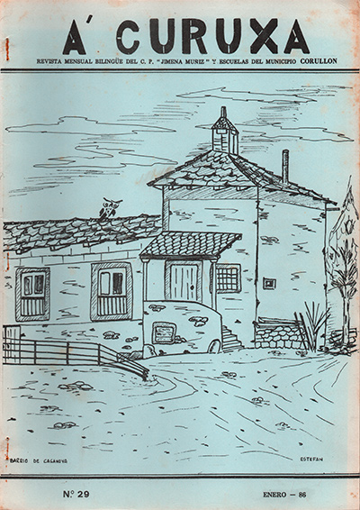
Nº 29
Enero 1986
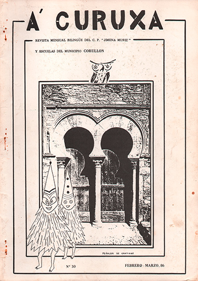
Nº 30
Febrero-Marzo 1986
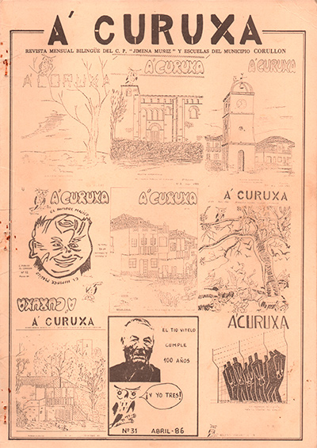
Nº 31
Abril 1986
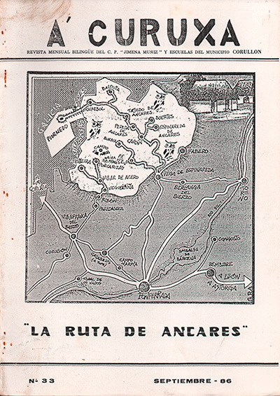
Nº 33
Septiembre 1986
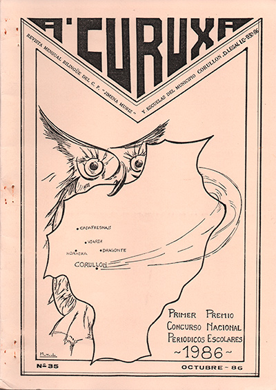
Nº 35
Octubre 1986
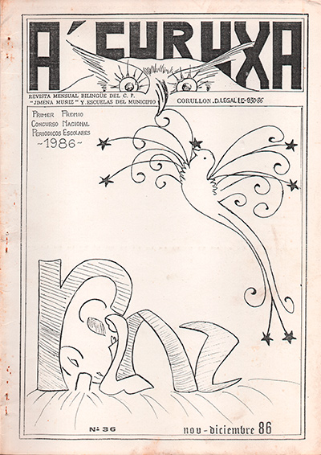
Nº 36
Noviembre-Diciembre 1986
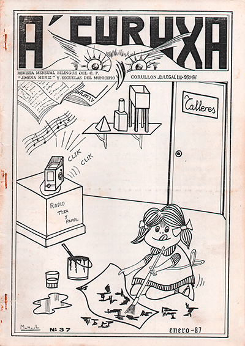
Nº 37
Enero 1987
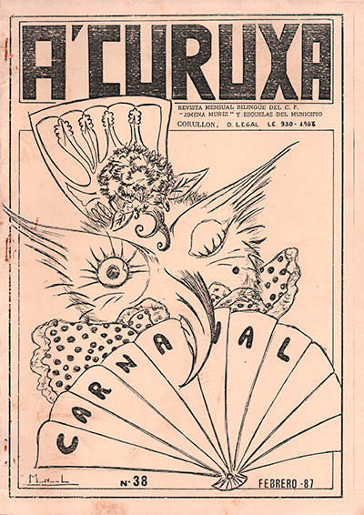
Nº 38
Febrero 1987

Nº 66
Abril 2009

Nº 67
Diciembre 2009
Sobre Archivo Curuxa
Archivo Curuxa es una hemeroteca digital de la revista escolar de Corullón. Este archivo reúne y conserva publicaciones escolares de Corullón desde 1982, digitalizadas para facilitar su consulta y conservación.